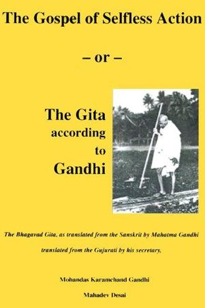

Library › Self-Improvement
The Gospel of Selfless Action (The Gita According to Gandhi) — Summary & Key Lessons

Gandhi's reading of the Gita as the gospel of action without attachment.
📖 OPEN THE FULL INTERACTIVE BREAKDOWN →🌐 Read it in Hindi, Hinglish, Gujarati, Tamil & 22 more languages — free, with audio.
💡 The Big Idea
Gandhi treated the Gita not as a text about a historical war but as an allegory of the soul's daily battle. His central teaching: perform your duty with total commitment and total detachment — act as if results matter, then release them completely. This combination, anasakti yoga, powered his nonviolence: the activist who is unattached to victory can fight without fear, hatred or despair, which is exactly what makes him unbeatable.
🧠 The 7 Key Lessons
Lesson 1: Read Scripture as Allegory, Not History
Introduction
Gandhi refuses to treat the Gita's war as a literal event. He argues that the battlefield is the human heart and the warriors are our impulses — good and evil fighting for control. The lesson: texts become living when you read them as mirrors rather than as records. Whether scripture, news or feedback, the question is always: what does this reveal about my own inner war?
📖 Example: Gandhi wrote that if the Gita were literal history, it would contradict his nonviolence — so he read it as the inner duel, which his nonviolence expressed perfectly. Read the full example →
⚡ Do this: Re-read one passage or piece of feedback you take personally, and ask instead: what inner battle of mine does this mirror?
Lesson 2: Anasakti — Work Like It Matters, Release the Result
The Heart of the Teaching
Gandhi's phrase for the Gita's core: anasakti, action without attachment. Not indifference — fierce engagement. You give everything to the work, then surrender the outcome to forces beyond you. The lesson: attachment to results produces anxiety, shortcuts and despair; detachment produces endurance. The detached worker can lose a thousand battles and still fight — which is why detachment is the ultimate competitive advantage.
📖 Example: Gandhi's satyagraha campaigns often 'failed' in the short term, yet he never wavered — because the fight itself was the fruit, not the win. Read the full example →
⚡ Do this: Take one outcome you are obsessed with. Consciously practice: give the task 100%, then spend one day not checking for results.
Lesson 3: The Inner Duel Is Fought Daily
The Battlefield Within
Gandhi describes the Gita as the story of the perpetual duel inside every human between the higher and lower self. The lesson: don't wait for a dramatic life war to test your values — the small daily choices are the real battlefield. Every morning you choose between discipline and comfort, truth and convenience, service and ego. The war is won in the micro-decisions, not in grand gestures.
📖 Example: Gandhi's famous daily experiments — spinning, fasting, walking miles to meetings — were not rituals; they were daily drills in the inner duel. Read the full example →
⚡ Do this: Identify one micro-battle you face daily (snooze button, gossip, junk food). Win it consciously for seven straight days.
Lesson 4: Non-Attachment Makes You Unbeatable
The Secret of Fearlessness
Why was Gandhi so fearless? Because he had nothing to lose — he had already surrendered results, reputation and even his life to the cause. The lesson: most fear is attachment — to status, comfort, approval, survival. Reduce attachment and you reduce fear; reduce fear and you act with full power. This is the psychological engine of every great resistance movement.
📖 Example: Walking alone to meet the Viceroy or facing rioters without guards, Gandhi's power came from having detached from everything except truth. Read the full example →
⚡ Do this: Write down the three things you fear losing most. For each, ask: what would I still be able to do if I lost it? That is your real freedom.
Lesson 5: Religion Must Pass the Daily-Life Test
Practical Spirituality
Gandhi's test of any teaching: can it be followed in day-to-day life? If a principle only works in a cave or on a pedestal, it is not truth — it is theatre. The lesson: spirituality is not a separate department of life; it is how you run your household, your business, your arguments. The highest teaching is the one that survives contact with a difficult Tuesday.
📖 Example: Gandhi applied the Gita to politics, diet, hygiene and even his disagreements with his own sons — the same principles everywhere. Read the full example →
⚡ Do this: Take your most important value and ask: where does it fail in daily life? Design one small practice to close that gap.
Lesson 6: Nonviolence Is Strength, Not Weakness
Ahimsa
For Gandhi, ahimsa was the natural expression of the Gita's teaching: if you are truly detached from results, you never need to injure anyone to get your way. Nonviolence is not passivity — it is the refusal to win by harming, which often requires more courage than fighting. The lesson: in conflicts, the question is not only 'how do I win?' but 'what does winning cost me and my opponent?'
📖 Example: Gandhi's salt march and civil disobedience moved an empire not by force but by the moral pressure of disciplined, suffering nonviolence. Read the full example →
⚡ Do this: In your next conflict, before escalating, ask: is there a way to assert my position without diminishing the other person?
Lesson 7: The Seeker Is the Experimenter
Experiments with Truth
Gandhi called his autobiography 'The Story of My Experiments with Truth' — because he treated truth as a hypothesis to test in life, not a dogma to defend. The lesson: adopt the experimenter's mindset — every principle is provisional until proven in your own experience. This humility is what kept him learning into his seventies. Certainty closes the door; experimentation keeps it open.
📖 Example: He tested fasting, diet, celibacy and nonviolence on himself before ever prescribing them to others — a scientist of the soul. Read the full example →
⚡ Do this: Pick one principle you believe (e.g., 'early rising improves my day'). Test it deliberately for 14 days, tracking evidence both ways.
✅ 5-Step Action Plan
- Read one scripture or text as an allegory of your own inner battle.
- Choose one outcome and practice full effort with released attachment.
- Win one daily micro-battle for seven straight days.
- List your three biggest fears and what remains if they materialize.
- Design a 14-day experiment to test one principle you hold.
⚠️ When This Doesn't Work
Gandhi's 'action without attachment, truth in daily life' is the most demanding ethics ever written — and the Ottoman printing ban is the warning about reverence for tradition: the empire that banned the printing press for 300 years to protect the calligraphers' sacred craft preserved its tradition perfectly — and guaranteed its own decline against every modern rival. Gandhi's own rejection of modern medicine and industry carried the same risk: not every old way is sacred, and not every new way is poison. The caveat: non-attachment should apply to tradition too. Hold the eternal values; let the tools change — the Gita's Krishna would have used the printing press.
💀 The Graveyard Proves It
📜 The Ottoman Printing Ban — The Empire That Said No to the Printing Press for 250 Years. Burn: Centuries of compounding knowledge. Read the full case study →
💬 Best Quotes from The Gospel of Selfless Action (The Gita According to Gandhi)
- “I have felt that the Gita teaches us that what cannot be followed in day-to-day practice cannot be called religion.”
- “Action based on non-attachment is the secret of the Gita.”
- “The Gita is not a historical work; it is a description of the duel that perpetually goes on in the hearts of mankind.”
Interactive version: mark lessons as read, listen in your language, share quote cards.